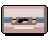
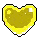

morango
achado durante as fases forçano o jogador a ter criatividade de movimentação
morango voador

também encontraddo pelas fases porem sddicionam um nivel de complexiade já que o dash espanta eles
fita b-side
normalmente escondiddas e protegidas por seções de plataformas desafiadoras
coração
escondidos ou protegido por puzzle de dificuldaed meia
coração
encontrado no fim dos b-sides
coração
encontrado no fim dos c-sides